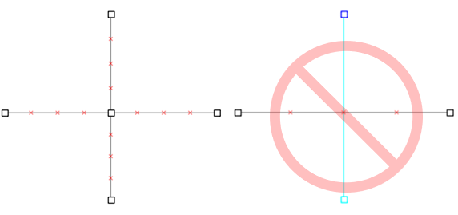

创建点与边
创建点：要创建单个点，请在构造视图中单击某个位置，然后再次单击。也可通过按 [空格键] 用键盘快速创建点。
创建边：在点-边工具（ ）处于活动状态时，单击该边所需的起点位置。第二次单击即完成该边。
）处于活动状态时，单击该边所需的起点位置。第二次单击即完成该边。
点-边工具（）可连接已存在的点，或通过在边上添加点来分割边。
相交的边
网格划分要求边构成块体。因此，点-边工具遵循以下规则：不能绘制一条边与另一条边交叉（见下图）。每当边相接时，必须用一个点标记其相接位置。


图 1：绘制边的有效与无效技法示意
创建曲线边
使用点-边工具（）创建的边有三种类型：直线、曲线和圆弧。要更改边类型，只需右键单击选中的边并选择编辑边属性。

其他绘制修饰键
绘制点时： - FISH 输入：编辑器也接受 FISH 变量作为输入。如果指定的变量尚未定义，随后将出现第二个对话框，要求给出该 FISH 变量的可接受定义。FISH 变量名应以“@”字符开头。可提供一个或两个变量。 - 合并点：可将一个点拖到另一个点上以合并这两个点。拖动点时按住 Shift 键将阻止该点与其他点合并。
绘制边时： - 捕捉到角度：按住 CTRL 键可将边的角度限制为 15 度的增量。默认值为 15 度，但可在“选项”对话框的“挤出”面板中更改。 - 捕捉到对象：按住 SHIFT 键将抑制捕捉到对象功能（该功能默认开启）。
其他鼠标与键盘修饰键
选择对象
- CTRL 键：将对象加入或移出多重选择。也可使用选择矩形选择一定范围的对象。
- DELETE 键：删除当前选择。
- 当点-边工具（）或控制点工具（ ）处于活动状态时，鼠标左键的选择功能转移到右键。
- 鼠标右键还可用于将选中对象拖动到新位置。
）处于活动状态时，鼠标左键的选择功能转移到右键。
- 鼠标右键还可用于将选中对象拖动到新位置。
上下文菜单 - 使用控制点工具时，右键单击某条边将弹出上下文菜单。忽略该菜单即可继续选择更多边，也可使用该菜单更改边类型。
| 这些内容对您有帮助吗？… | FLAC3D © 2019, Itasca | 原文更新于 2020 年 10 月 8 日 |